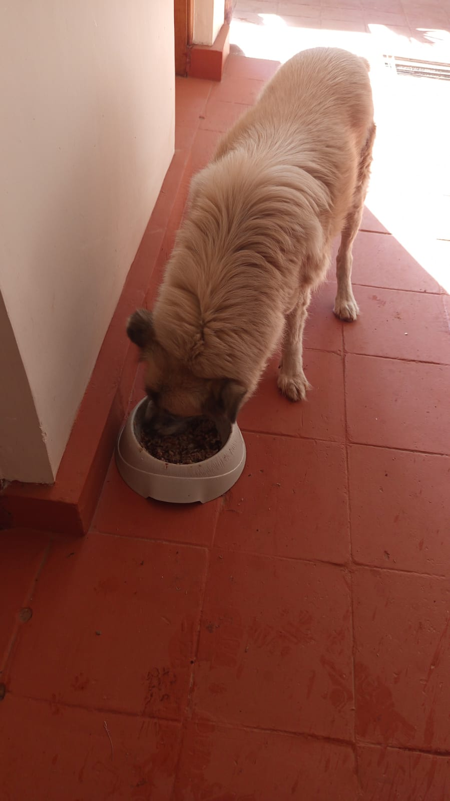

Mucheru World of Golf
Field operations at Mucheru World of Golf on Wednesday, 23rd September 2026 focused on sand application on putting greens, dam perimeter drainage trenching, teebox earthwork, tree planting, and boundary preparations:
- Riversand Applied on Green 2 and Green 9: Manual crews used shovels and wheelbarrows to move clean riversand across the compacted pumice sub-bases of Green 2 and Green 9. Both green surfaces are now fully covered with riversand heaps ready for screeding and final leveling.
- Dam 2 and Dam 3 Perimeter Trenching: Excavation teams cut and completed drainage trenches along the entire outside perimeter embankment of both Dam 2 and Dam 3. These trenches run around the crest to capture incoming runoff and protect dam walls.
- Palm Tree Planting up to Green 6: Palm tree planting along the boundary fence road advanced to Green 6. All prepared holes were filled and planted with palms, leaving 16 unplanted palm trees in reserve for the next section.
- Hardcore Rock Haulage to Green 7: The farm tractor and tipping trailer hauled loads of hardcore rocks from site stockpiles and delivered them directly into the Green 7 sub-base bed to support foundation hand-packing.
- Loading Dumped Red Soil with Backhoe Loader: The Backhoe Loader used its front loader bucket to scoop dumped red soil from the far gate and load it onto the tractor trailer. The soil was ferried across the site to backfill palm tree holes as planting progressed.
- Teebox 4 Reshaping: The Backhoe Loader was deployed to Teebox 4 to reshape the playing platform. The machine cut, graded, and leveled the earthen surface to achieve proper elevation and alignment with the fairway corridor.
- Barrier Berm Raised at Green 14: The Backhoe Loader raised and reshaped the protective earthen barrier berm alongside Green 14, establishing clear definition along the hole border.
- Manure Placement for Perimeter Hedges: Peter Githinji's ladies crew placed manure along the inner edge of the perimeter fence trench in readiness for planting boundary hedges.
- Material Delivery: Received 1 lorry load of clean riversand on site, which was tipped and immediately used for putting green application.
Drainage & Dam Catchment Note
Perimeter trenches around Dam 2 and Dam 3 are now fully excavated on the outside embankment. These trenches intercept surface runoff and safely direct clean overflow into the storage reservoirs while preventing edge erosion.
Summary of heavy machinery and tractor hours logged at Mucheru World of Golf on Wednesday, 23rd September 2026:
| Equipment Description | Operator / Assignment | Operating Hours | Hourly Rate (KES) | Total Cost (KES) |
|---|---|---|---|---|
| Backhoe Loader (XGMA) Single machine unit (Front Loader / Backhoe) |
Reshaping Teebox 4 platform, loading dumped red soil at gate into tractor trailer, and raising/reshaping barrier berm at Green 14 | 7.00 hrs | 6,500.00 | 45,500.00 |
| Farm Tractor & Trailer | Transporting hardcore rocks to Green 7, hauling red soil to palm tree planting holes, and moving materials across site | Operational Support | Farm Asset | — |
| Total Machinery Expenditure | 7.00 hrs | — | KES 45,500.00 | |
Ground and aerial video footage showing riversand spreading on Green 2 and Green 9, Backhoe Loader reshaping Teebox 4, Dam 2 and Dam 3 perimeter trenching, tractor hauling hardcore to Green 7, and palm tree planting along the boundary fence road.
Comprehensive 18-hole putting green status ledger tracking foundation bases, pumice compaction, riversand spreading, contouring, and drainage connections. Highlighting incremental updates on September 23, 2026:
| Green | Current Technical & Agronomic State | Milestone Status |
|---|---|---|
| Green 1 | Volcanic pumice stone sub-base mechanically compacted with vibratory roller compactor (Sep 19); red loam spread; pumice aggregate leveled; subgrade drainage trenched (Sep 15). | Pumice Compacted |
| Green 2 Today | Clean riversand applied and spread across the entire green bed over compacted volcanic pumice sub-base (Sep 23); red loam collar shaped; subgrade drainage trenched. | Riversand Applied |
| Green 3 | Clean riversand hauled and actively applied across green foundation surface ready for leveling (Sep 22); volcanic pumice stone sub-base compacted (Sep 19); subgrade drainage trenched. | Riversand Applied |
| Green 4 | Clean riversand hauled and spread across contoured bean-shaped complex (Sep 22); volcanic pumice sub-base compacted (Sep 19); architectural shaping complete; drainage trenched. | Riversand Applied |
| Green 5 | Subgrade drainage trenching line now fully connected into Dam 2 outfall (Sep 21); ready; fully established mature championship putting green turfgrass under active sprinkler irrigation. | Turf Ready • Drainage Tied |
| Green 6 Today | Palm tree planting along boundary road advanced to Green 6 (Sep 23); raised soil barrier berm pushed back (Sep 21); elevated soil border berm shaped between Green 6 and Green 15; subgrade drainage cut. | Palms Reached Green 6 |
| Green 7 Today | Hardcore rocks hauled from site stockpiles using farm tractor trailer and delivered directly into green sub-base bed for ongoing foundation packing (Sep 23); subgrade drainage trenched. | Hardcore Hauling & Packing |
| Green 8 | Riversand applied earlier remains unleveled; clean riversand delivery received on site stockpile (Sep 20); red volcanic loam spread; subgrade drainage trenches excavated (Sep 15). | Riversand Unleveled |
| Green 9 Today | Clean riversand application completed across the entire green surface ready for final leveling (Sep 23); volcanic pumice graded and compacted; subgrade drainage trenched. | Riversand Applied |
| Green 10 | Design finishing touches completed across green surface and surrounds (Sep 21); boundary with Green 15 reshaped; volcanic pumice compacted with vibratory roller (Sep 20); apron expanded; drainage cut. | Design Touches • Compacted |
| Green 11 | Volcanic pumice sub-base compacted with vibratory roller compactor; Joe's crew filled unlevelled low spots with pumice during compaction (Sep 20); hardcore stabilized; membrane placed; drainage cut. | Pumice Compacted |
| Green 12 | Volcanic pumice sub-base compacted with vibratory roller compactor; Joe's crew filled unlevelled low spots with pumice during compaction (Sep 20); hardcore packed; membrane placed; drainage cut. | Pumice Compacted |
| Green 13 | Red soil hauled and spread to fill up and grade green surrounds; protective soil boundary barrier constructed between Green 13 and Green 17 (Sep 21); volcanic pumice sub-base compacted (Sep 20); drainage cut. | Red Soil Filled • Boundary Berm |
| Green 14 Today | Earthen barrier berm raised and reshaped along green boundary using Backhoe Loader (Sep 23); boundary berm sculpted with Green 16 (Sep 22); volcanic pumice sub-base compacted (Sep 20); drainage trenched. | Barrier Berm Raised |
| Green 15 | Boundary with Green 10 reshaped; volcanic pumice compacted with vibratory roller, with Joe's crew backfilling unlevelled depressions with pumice (Sep 20); outfall drainage connected to Dam 1 (Sep 17); membrane placed. | Boundary Reshaped • Compacted |
| Green 16 | Earthen boundary berm sculpted between Green 16 and Green 14 using Backhoe Loader (Sep 22); volcanic pumice sub-base compacted (Sep 20); hardcore foundation bed packed; membrane installed; drainage cut. | Boundary Berm Sculpted |
| Green 17 | Red soil hauled and spread to fill up and grade green surrounds; protective soil boundary barrier constructed between Green 17 and Green 13 (Sep 21); volcanic pumice sub-base compacted (Sep 20); membrane installed. | Red Soil Filled • Boundary Berm |
| Green 18 | Design finishing touches completed across organic bean-shaped complex and approach (Sep 21); volcanic pumice sub-base compacted with vibratory roller compactor (Sep 20); hardcore fractured; drainage cut. | Design Touches • Compacted |
Comprehensive 18-hole championship teebox platform audit tracking earthwork leveling, structural embankments, and playing corridor alignments. Preserved day-to-day continuity as of September 23, 2026:
| Teebox | Current Technical & Earthwork State | Platform Status |
|---|---|---|
| Tee 1 | Platform leveled, graded, and compacted with mass murram fill during course bulk earthmoving. | Platform Leveled |
| Tee 2 | Foundation fill dumped and platform rough-leveled using 8 tipper truckloads of structural fill. | Fill Placed & Leveled |
| Tee 3 | Foundation fill dumped and platform rough-leveled using 8 tipper truckloads of structural fill. | Fill Placed & Leveled |
| Tee 4 Today | Championship launch platform completely reshaped, cut, and graded using Backhoe Loader (Sep 23); surface contour leveled to design elevation and aligned to fairway corridor. | Platform Reshaped |
| Tee 5 | Launch platform completely reshaped, cut, and graded using Backhoe Loader (Sep 22); elevated platform aligned to fairway corridor; palm trees planted along adjacent boundary line. | Platform Reshaped |
| Tee 6 | Precision leveling and compaction completed along the boundary tree corridor. | Platform Leveled |
| Tee 7 | Dual launch platforms completely reshaped and precision contour-leveled using XGMA backhoe loader (Sep 20); elevated plateaus reinforced and perimeter protective earth berms sculpted along fence line. | Dual Platforms Reshaped |
| Tee 8 | Graded, leveled, and contour-adjusted to match fairway transitions and surrounds. | Contour Adjusted |
| Tee 9 | Playing platform leveled and surrounding perimeter ground graded (Sep 1). | Platform Leveled |
| Tee 10 | Graded and compacted platform serving the start of the back-nine playing corridor. | Platform Compacted |
| Tee 11 | Rough shaping, elevation grading, and Backhoe subsoil leveling completed (Sep 7). | Shaped & Graded |
| Tee 12 | Dual platforms established: primary championship tee resized; new forward Ladies' Tee platform constructed (Sep 5). | Dual Platforms Complete |
| Tee 13 | Playing platform completely reshaped, contour-leveled, and perimeter shoulders graded to match fairway transition (Sep 16). | Reshaped & Leveled |
| Tee 14 | Playing platform reshaped, elevation precision-leveled, and protective boundary embankment reinforced (Sep 16). | Reshaped & Leveled |
| Tee 15 | Playing platform completely shaped and contour-leveled with backhoe loader (Sep 19); primary irrigation tie-in zone established; main HDPE waterline laid along boundary trench (Sep 15). | Shaped & Leveled |
| Tee 16 | Playing launch platform completely reshaped and precision-leveled using XGMA backhoe loader (Sep 20); surface contours profiled to integrate cleanly with fairway approach corridor. | Reshaped & Leveled |
| Tee 17 | Playing platform widened and expanded to increase launch surface area; filled, compacted, and edge transitions graded (Sep 16). | Widened & Leveled |
| Tee 18 | Championship tee platform leveled; perimeter approach cleared and graded (Sep 1). | Platform Leveled |
Operations Synthesis
Golf course engineering and agronomy achieved key milestones on Wednesday, 23rd September 2026. Major progress was made on putting greens with clean riversand applied across Green 2 and Green 9, bringing both beds to complete sand coverage. Outside drainage trenches were fully excavated around the perimeter embankments of both Dam 2 and Dam 3 to protect dam structures and capture runoff. Palm tree planting along the boundary fence road reached Green 6, with 16 palm trees remaining for subsequent rows. The Backhoe Loader completed 7.00 operating hours, reshaping Teebox 4, loading dumped red soil at the gate onto the tractor trailer for tree planting holes, and raising a protective barrier berm at Green 14. The farm tractor hauled hardcore rocks to Green 7 sub-base, while Peter Githinji's ladies crew placed manure along the fence line ready for planting perimeter hedges.
Sequential field photography documenting sand spreading, dam perimeter trenching, teebox earthwork, barrier berm shaping, rock haulage, red soil loading, and palm tree planting:

Green 2 — Riversand Surface Coverage
Aerial drone view showing Green 2 fully covered with clean riversand placed in uniform heaps over the compacted pumice sub-base ready for leveling.

Green 9 — Riversand Application Complete
Aerial perspective of Green 9 showing complete riversand coverage across the entire putting bed, surrounded by red soil collars.

Putting Green — Wheelbarrow Sand Spreading
Site workers wheelbarrowing clean riversand from the stockpile onto the green foundation bed surrounded by shaped red soil shoulders.

Putting Green — Sand Profile & Apron Bed
Ground-level shot displaying spread riversand across the green foundation with red soil berms and sub-base aggregate in the foreground.

Clean Riversand Delivery — 1 Lorry
Stockpile of clean riversand delivered by lorry on site, with workers filling wheelbarrows for distribution to putting green complexes.

Dam 2 — Outer Perimeter Trench Complete
Aerial drone view showing Dam 2 with the perimeter drainage trench fully excavated along the outer crest of the embankment.

Dam 3 — Perimeter Embankment Trench
Aerial drone perspective showing Dam 3 with the perimeter trench fully excavated along the top outside edge of the embankment.

Dam 3 & Surrounding Green Complexes
Wide aerial view displaying Dam 3 with its perimeter trench alongside adjacent putting greens under sand and sub-base construction.

Dam 3 — Manual Trenching Team
Field crew digging the perimeter trench along Dam 3, with stockpiles of volcanic pumice, ballast stone, and red soil in the foreground.

Teebox 4 — Backhoe Loader Reshaping
XGMA Backhoe Loader cutting and grading the soil platform to reshape Teebox 4 to design elevation.

Teebox 4 — Completed Playing Platform
Finished view of Teebox 4 showing the elevated, leveled, and compacted launch platform aligned to the playing fairway.

Hole Boundary — Reshaped Earth Berm
Drone shot capturing the reshaped and graded earthen barrier berm separating adjacent playing areas.

Green 14 — Raised Protective Barrier
Ground shot of the raised earth barrier berm built along Green 14 to establish boundary definition and protect the green surrounds.

Boundary Barrier — Earthen Profile
View of the continuous raised earth barrier berm sculpted along the corridor edge with red soil transitions.

Hardcore Haulage — Farm Tractor Trailer
Farm tractor tipping trailer loaded with hardcore rocks transported across the course to Green 7 foundation bed.

Green 7 — Offloading Hardcore Rocks
Tipping trailer offloading hardcore rocks directly into the excavated Green 7 sub-base bed with trench channels.

Red Soil Loading — Backhoe Loader Front Bucket
Backhoe Loader using its front loader bucket to load dumped red soil at the gate into the tractor trailer for tree planting holes.

Boundary Tree Planting — Agronomy Ladies Crew
Peter Githinji's women's crew planting palm trees into prepared holes along the perimeter fence corridor.

Palm Tree Line — Advanced to Green 6
Aerial drone capture showing the aligned row of planted palm trees reaching near Green 6 along the boundary fence road.

Perimeter Fence — Manure Placement for Hedges
Crew placing organic manure along the inner trench of the perimeter fence in readiness to plant boundary hedges.
Chaka Farms
Daily operations at Chaka Farms on Wednesday, 23rd September 2026 included dairy cow milking, working canine obedience and manners training, off-leash exercise, and general compound cleaning:
- Dairy Milking Yield: Dairy operations supervised by Kamandau recorded a total gross milk production of 5.0 Litres from the herd (2.5 Litres from the morning session and 2.5 Litres from the evening session). Routine milk rations were deducted directly out of this gross yield: 1.0 Litre total for young goat kids (0.5L morning and 0.5L evening), 0.5 Litre for Gladys, and 0.5 Litre for Maasai. Deductions totaled 2.0 Litres, leaving a net remaining farm inventory balance of 3.0 Litres.
- Canine Unit Care & Manners Training: Willy oversaw the working dog unit. The dogs underwent kennel manners training inside their stalls and were taken for off-leash walking and exercise around the farm grounds, practicing recall and calmness.
- Compound Cleanliness & Maintenance: Margaret and Monica carried out general compound cleaning, grounds sweeping, and routine garden maintenance across the farm.
Canine Unit Progress
Willy conducted kennel manners drills and off-leash farm walks with the five White Swiss Shepherds. The dogs demonstrated strong discipline, sitting calmly together in group drills on the lawn.
Quantitative log of gross cow milk production, routine disbursements, and net farm balance for Wednesday, 23rd September 2026:
| Milking Session | Gross Yield (Litres) | Allocations / Disbursements (Litres) | Net Balance (Litres) |
|---|---|---|---|
| Morning Session | 2.5 L |
• Goat Kids: 0.5 L • Gladys: 0.5 L |
1.5 L |
| Evening Session | 2.5 L |
• Goat Kids: 0.5 L • Maasai: 0.5 L |
1.5 L |
| Daily Total | 5.0 L Gross | 2.0 L Total Allocated | 3.0 L Net Balance |
Milk Accounting Clarity
Gross milk yield represents total dairy cow production (5.0 Litres). All rations—including goat kids' daily milk allowance (1.0L total), Gladys (0.5L), and Maasai (0.5L)—are drawn directly out of this gross volume, leaving a net farm inventory of 3.0 Litres.
Field video recording of the working dog unit during kennel manners practice, showcasing crate discipline, calmness, and handler response under Willy's guidance.
Field photography documenting the working canine unit during manners training, group stay drills, and farm exercise:

Canine Unit — Group Down-Stay Drill
All five White Swiss Shepherd dogs lying in a neat row on the lawn during obedience and discipline training at Chaka Farms.
.jpeg)
Canine Unit — Post-Exercise Relaxation
The dogs resting calmly together on the lawn following their off-leash walking and exercise session across the farm.
.jpeg)
Canine Unit — Alert Sit-Stay Practice
Four dogs sitting alert side by side on the lawn, demonstrating handler focus and obedience.
Kabete Residence
Field operations and property maintenance were conducted at Kabete Residence on Wednesday, 23rd September 2026, with updates overseen and shared by Njoki:
- Staff Quarters Foundation Excavation Completed: Civil construction at the outdoor fireplace reached a major milestone today as foundation trench digging was fully completed. The crew cleared all rock channels and loose volcanic earth down to firm bearing ground along the building wall lines.
- Cutting and Bending Steel Bars in Progress: Steel fixers were actively engaged on site measuring, cutting, and bending steel reinforcement bars required for the building structure.
- Bending Column Reinforcement Bars: Using a manual bending tool and timber bench, workers bent reinforcement bars into stirrups and column link cages in preparation for structural column assembly.
- Domestic Pet Care & Ajabu Walk: Ajabu the Golden Retriever was taken on an outdoor walk on a leash along the paved driveway and garden paths, getting exercise and exploring the grounds. Scheduled feeding routines were completed for Ajabu on the porch veranda and for resident cats (Reo, Mocha, and Aiko) eating together side by side.
Kabete Construction Milestone
Foundation trench digging for the Staff Quarters at the fireplace is now 100% complete. Operations immediately shifted into rebar preparation, with cutting and bending of column links and main steel actively underway.
Sequential field photography documenting completed foundation trenches, steel cutting and bending, and domestic pet care:

Staff Quarters — Foundation Digging Complete
Construction workers in safety vests finalizing the deep foundation trenches in rocky red soil at the fireplace building site.

Foundation Excavation — Overhead Trench View
Overhead perspective showing the excavated trench network cleared of loose rocks down to firm bearing foundation ground.

Foundation Base Along Stone Masonry
Cleared foundation channels along the stone masonry wall, exposing solid base ready for blinding and rebar placement.

Steel Reinforcement — Cutting & Bending
Steel fixers cutting rebar to measured lengths on the ground and bending bars on the timber bending bench.

Column Rebar — Manual Bending Bench
Craftsman using a bending key on a mounted timber beam to shape column reinforcement steel bars.

Column Stirrups — Prepared Link Stack
Stack of freshly bent steel stirrup links ready to be tied into vertical column reinforcement cages.

Ajabu the Golden Retriever — Outdoor Walk
Ajabu on a leash being walked along the paved driveway lined with hedges at Kabete Residence.

Ajabu — Exploring Garden Grounds
Ajabu exploring garden plants and palm fronds during his afternoon exercise walk.

Ajabu — Walkway Exercise
Ajabu walking calmly along the patterned paved pathway during his daily routine.

Ajabu — Scheduled Porch Feeding
Ajabu enjoying his meal from a feeding bowl on the veranda tiles at Kabete Residence.

Resident Cats — Reo, Mocha & Aiko
Resident cats Reo, Mocha, and Aiko peacefully eating side by side from individual bowls inside the residence.